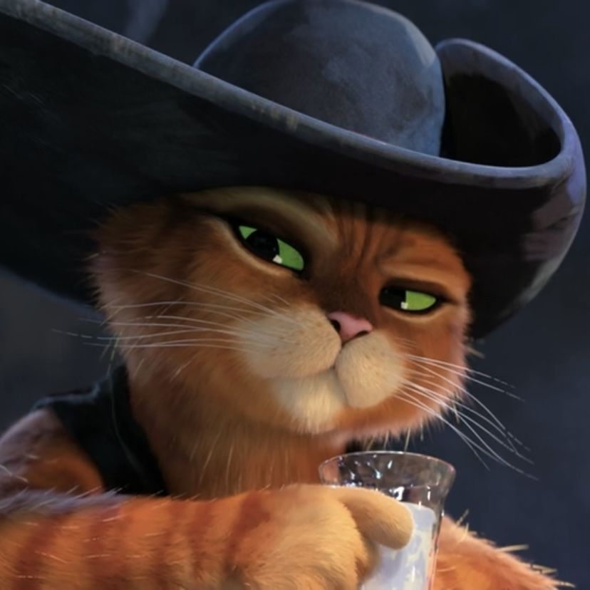
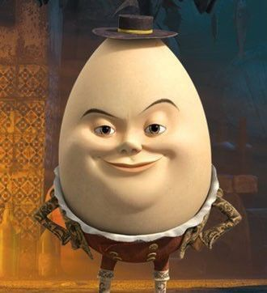
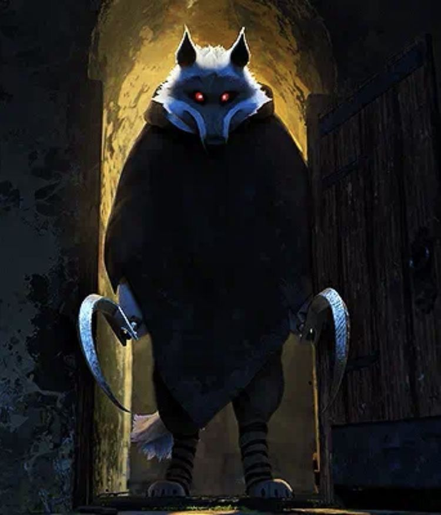

Puss in Boots

- European Fairy Tales: The character comes from a long tradition of European oral storytelling. The
best-known literary version was published by Charles Perrault in 1697, in Tales of Mother Goose.
- Italian Literature: Earlier versions appeared in the works of Giovanni Francesco Straparola, in
the 16th century, and Giambattista Basile, in the 17th century. Both feature clever cats who help
poor young men achieve wealth and social status.
- The Trickster Archetype: Puss represents the folkloric trickster, a character who defeats stronger
opponents through intelligence, deception, and persuasion rather than physical strength. Similar
figures appear in many cultures, including the fox in European fables and the coyote in Indigenous
American traditions.
- Zorro and The Three Musketeers: DreamWorks' version combines the fairy-tale cat with the image of
the charming swordsman and adventurer. His fighting style and personality evoke Zorro and the
swashbuckling heroes of classic adventure stories.
Humpty Dumpty

- English Nursery Rhyme: Humpty Dumpty originates from a traditional English nursery rhyme recorded
in the late 18th century, in which an egg-shaped character falls from a wall and cannot be put back
together.
- Alice Through the Looking-Glass (Lewis Carroll, 1871): The character gained his familiar
appearance and personality through Lewis Carroll's book, illustrated by John Tenniel. He appears as
an anthropomorphic egg with an arrogant personality and an obsession with the meaning of words.
- Jack and the Beanstalk: In Puss in Boots: The Last Wish, Humpty's story is connected to the tale
of Jack and the Beanstalk and the golden-egg-laying goose. This association helps explain his
obsession with golden eggs and his desire for wealth and acceptance.
Wolf/Death

- The Big Bad Wolf: The Wolf draws from the traditional European fairy-tale villain, especially the
Big Bad Wolf from stories such as Little Red Riding Hood and The Three Little Pigs. However, instead
of being portrayed as a simple predator, he becomes a mysterious and intimidating figure.
- The Grim Reaper: His black hooded cloak, red eyes, and curved blades evoke the medieval European
personification of Death, traditionally depicted as a dark figure carrying a scythe.
- Greek Mythology: The scene in which the Wolf places two coins over
his eyes recalls ancient Greek funerary customs. Coins were traditionally placed with the dead as
payment for Charon, the ferryman who transported souls to the underworld.
- El Cadejo: The Wolf's appearance also recalls the supernatural dogs of Mexican and Central
American folklore. The black Cadejo, often described with glowing red eyes, is associated with
danger and death.
- Sergio Leone's Western Films: According to director Joel Crawford, the Wolf's confrontations with
Puss were inspired by classic Spaghetti Westerns, particularly the tense duels and visual style of
Sergio Leone's films. His haunting whistle reinforces this atmosphere.